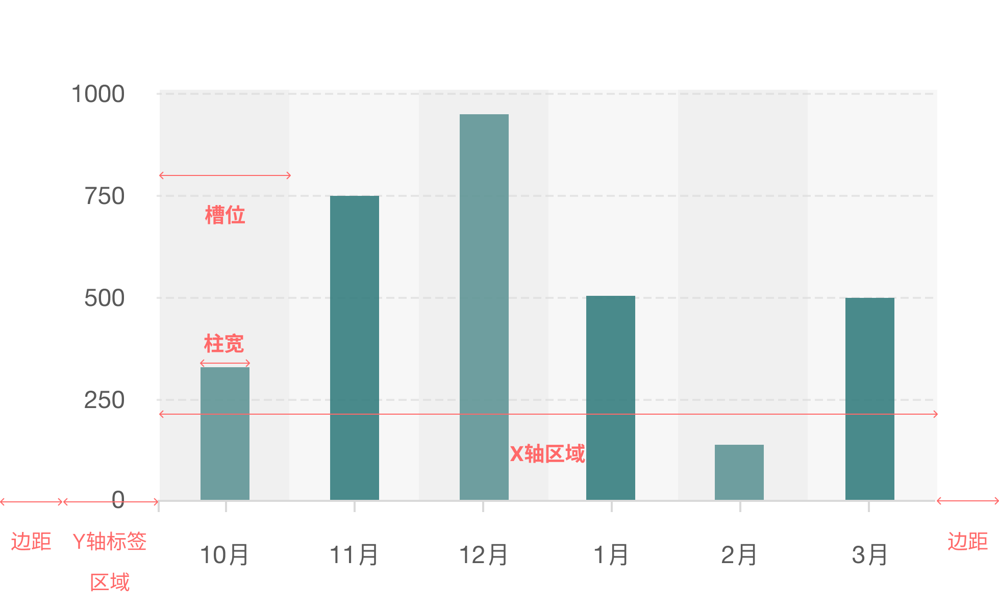
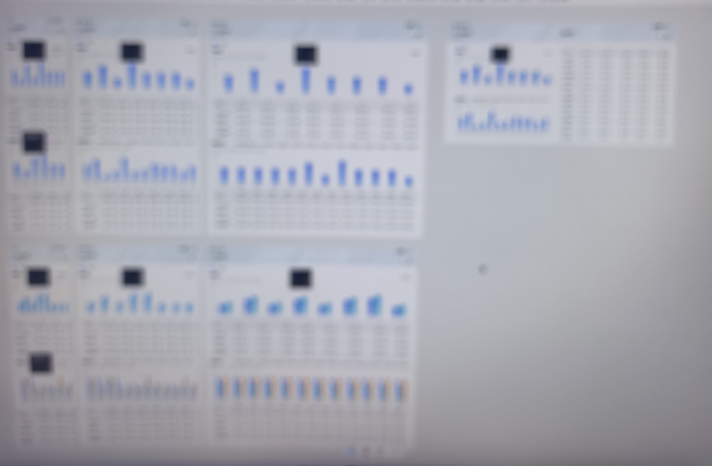

移动端多设备的图表响应式设计
项目价值
大幅降低产研成本
从「像素驱动」转向「逻辑驱动」，
视觉还原度达到100%，减少走查时间约50%。
用户主观评价提升
- 「更有呼吸感，看着不挤」
- 「折叠屏展开，图表与表格能同屏看」
项目背景
「终端设备形态日益多样化，应用设计需要考虑界面能适配不同的屏幕尺寸、屏幕方向和设备类型。同时要保持多设备体验的连续性」——HarmonyOS多设备响应式设计
随着HarmonyOS生态的快速扩张，我们的B端产品正从单一的直板手机向折叠屏、平板等多终端形态延伸。在这一过程中，作为核心业务组件的“数据图表”面临着前所未有的适配挑战。简单等比拉伸造成大屏空间浪费，信息密度不足，用户阅读困难的问题。
体验原则
在我们的业务场景中，图表常用于分析决策，因此需要在多设备上保持「同一套语义且接近一致的视觉密度」，并在保证体验连续的前提下让大屏获得合理增值，为此我们制定了如下原则：
- 体验连续——图表的「数据可读性与信息密度」随屏幕变化应尽量平滑，避免因拉伸导致柱子过粗或过细，从而改变读数难度与视觉权重。
- 体验可控——关键视觉参数（例如柱宽、组内间距、组数）必须有可解释的计算口径，便于设计、前端与产品对齐。
- 体验增值——当屏幕变大时，不是盲目放大图形，而是通过展示更多类目（或更完整的数据窗口）提升信息量。
适配图表类型
根据统计，常用图表大致为：柱状图（35%）、折线图与面积图（30%）、环形图（20%）、条形图（10%）、其他（5%）。不论使用频率还是适配难度，柱状图都是重难点；下文以柱状图为主线展开。
柱状图适配分析
一、用合理留白突出柱体
柱状图分为三种：单柱状图、堆叠柱状图、分组柱状图。尽管形态各异，设计核心是一致的：通过视觉引导凸显各分类间的数量差异。遵循格式塔心理学中的「主体—背景（Figure-Ground）」原则，应将柱体塑造为视觉主体，通过合理留白提供呼吸空间，让注意力落在数据本身。
二、找到合理柱宽比例
在明确留白的重要性之后，核心挑战是如何量化柱体与「槽位」的比例，这需要从拆解X轴的物理空间开始：
- 界定空间：从卡片总宽中剔除边距与标签区，得到真实绘图区域。
- 划定单元：将区域按组数等分，得到「槽位」。
由此可锁定关键变量柱宽比（BarWidthRatio）：在有限单元里，柱子占多少、留白留多少，决定图表的呼吸感与易读性。

三、指定图表库调节参数
不同图表库对该变量的定义不同：Ant G2Plot可使用columnWidthRatio；Highcharts可通过pointPadding控制留白比例。我们使用的ECharts则用barWidth调节柱子占槽位的宽度。
四、寻找柱宽比：传统设计稿与可交互原型
在本项目中，我没有采用「按固定尺寸画多稿」的方式：一方面工作量大，另一方面它难以承载连续变化的体验逻辑。在条形图响应式场景中，至少同时存在：
- 画布宽度随设备形态或用户操作变化（如旋转）。
- 类目数量可能因用户操作变化（增删类目）。
- 分组数量会影响柱间距与可展示密度。
若按多稿覆盖，需要为多种「尺寸×参数」组合分别出图；即便画得出来，也只能验证某一帧，难以表达拖拽与切换时的连续反馈，也就不易回答「为何这样响应式更合理」。
演示效果
我用Vibe Coding的形式开发了一个工具，可直观查看不同参数下图表形态与变化；工具内可调：画布宽度、分组数量、类目数量、柱宽比等。
同样地，对于折线图和环形图，我也通过定义关键变量（最小点间距和内外环比），保证在不同设备上保持体验连续。
结果展示

你可以在浏览器中直接体验这个调参工具：ECharts 响应式调参 Demo